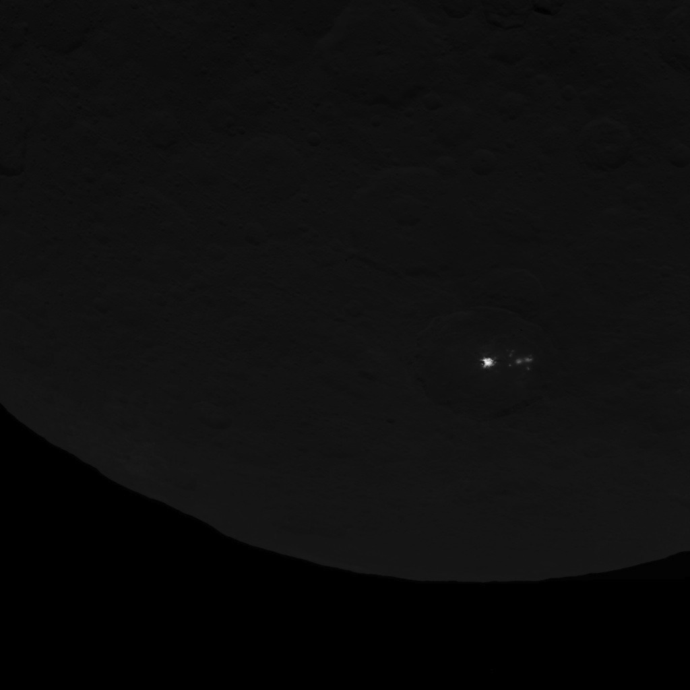

buny
dj, producer
|| latest

essential fall ep: out 01/31 on bandcamp
erosion: a three part project by buny and bronson
EROSION is a three-set project that draws inspiration from the natural process of gradual destruction that shapes our physical and metaphysical world. Each set explores a different aspect of erosion against a backdrop of distorted vastness - from raw textures reminiscent of the surrounding environment, to melodies that evoke feelings of personal loss and pain.
bronson b2b buny | buny | bronson
|| upcoming shows
jan 31, 2026 - bunys world: essential fall ep release stream - bside radio